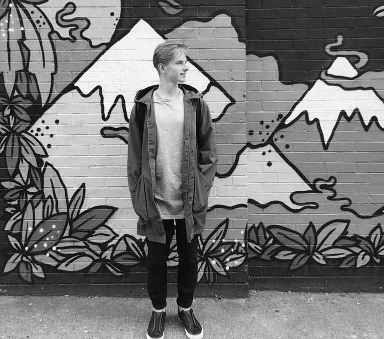

Bachelor of Arts Contemporary Communication student based in Klaipeda, Lithuania. I have always had a passion for visual design and making a difference by joining the creative community. During the time at ISTC Strategies et Communications and other universities abroad, I had to get out of my comfort zone - meet new people, live independently, and discover new interests and passions of mine; find myself as a creative individual eager to learn, experiment and listen to other stories, ideas. Listening is an essential part of creating a visual design that communicates a message. I find myself leaning towards the minimalist design ideas and approaches. My inspirations come from the modern generation of artists and everyday life. This website is designed for you to learn more about me and my experience in visual communication design.